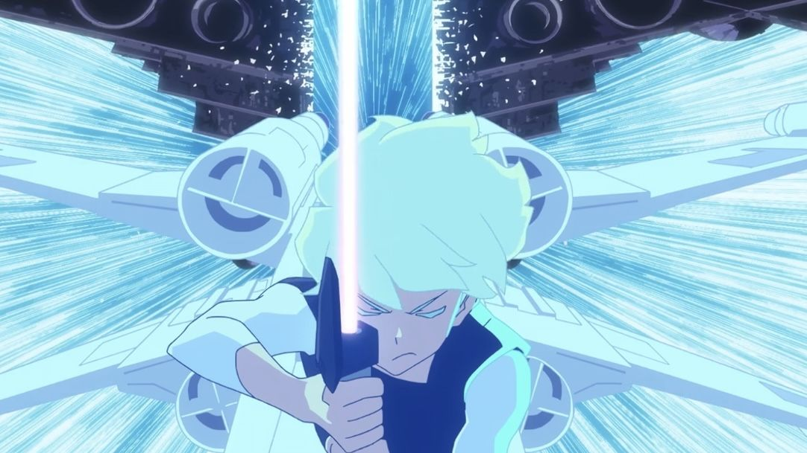

.png)

Por Vitoria Lopes Gomez, editado por Ana Luiza Figueiredo | 11/04/2023 19h18
2ª temporada de Star Wars: Visions ganha primeiro trailer
Star Wars: Visions retorna em 4 de maio com a proposta de episódios antológicos e sem conexão com o universo principal da franquia
O evento Star Wars Celebration Europe desse ano foi recheado de novidades. Entre elas, o retorno de Star Wars: Visions para a segunda temporada foi uma das que mais animou os fãs da franquia.
Star Wars: Visions
A primeira temporada é de 2021 e trouxe nove episódios criados e produzidos por diferentes estúdios, de diferentes lugares do mundo;
- A primeira temporada é de 2021 e trouxe nove episódios criados e produzidos por diferentes estúdios, de diferentes lugares do mundo;
- A mesma proposta, de deixar os capítulos nas mãos de diversos criadores, continua na segunda temporada, o que deve seguir garantindo a autenticidade da produção;
- A série animada é antológica e não é cânone, ou seja, os episódios não são conectados ou seguem uma ordem cronológica, e a história não faz parte do universo principal de Star Wars;
- Já na primeira temporada, o produtor executivo, James Waugh, explicou que isso é benéfico por dar aos criadores a liberdade para ousar nos episódios, sem necessidade de conectar eventos ou correr o risco de alterar a linha principal da franquia;
- Além disso, os criadores podem abordar novas formas de, por exemplo, usar a Força — o que deve acontecer na segunda temporada de Visions;
- A nova temporada também deve contar com histórias com foco em jovens sensitivos da Força adquirindo seus poderes, assim como Jedi e Sith habilidosos usando seus poderes;
- A nova leva de episódios incluirá dois em stop-motion.
Lançamento da segunda temporada
A segunda temporada de Star Wars: Visions chegará ao Disney+ em 4 de maio. A data é considerado um dia especial para os fãs de Star Wars, conhecido como “May the 4th“.
Outros lançamentos
- Star Wars: Young Jedi Adventures segue um grupo de crianças estudando a Força para se tornarem Jedi, entrou no streaming da Disney em abril;
- A terceira temporada de The Mandalorian está em exibição no Disney+;
- Ahsoka, série estrelada por Rosario Dawson que conta a história da Jedi, está prevista para agosto desse ano;
- Skeleton Crew, que segue crianças perdidas na galáxia e se passa na mesma linha do tempo de The Mandalorian chega no streaming ainda esse ano.